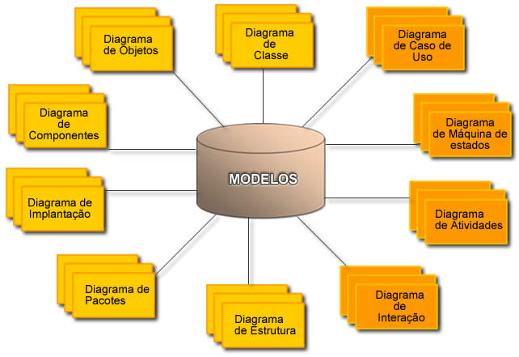

Diagramas Estruturais
Diagrama de Classes:
O Diagrama de Classes é utilizado para fazer a representação de estruturas de classes de negócio, interfaces e outros sistemas e classes de controle. Além disso, o diagrama de classes é considerado o mais importante para a UML, pois serve de apoio para a maioria dos demais diagramas.
Diagramas de Componentes
O Diagrama de Componentes apresenta uma visão estática de como o sistema será implementado e quais os componentes utilizados. Através deste diagrama, são identificados os arquivos que irão compor o software em termos de módulos, bibliotecas, formulários, etc., além de identificar os relacionamentos destes.Além de modelar os componentes, este diagrama destaca a função de cada componente, facilitando a sua reutilização em outros sistemas.
Diagramas de Implantação
Um diagrama de implantação modela o relacionamento entre recursos de infra-estrutura, de rede ou artefatos de sistemas. Este diagrama é normalmente utilizado em projetos onde há muita interdependência entre partes de hardware e software. Cada nó deste diagrama é uma unidade física que representa um recurso computacional, como processadores, dispositivos, roteadores ou qualquer equipamento de importância para o sistema de software.
Diagramas de Pacotes
O Diagrama de Pacotes tem por objetivo representar os subsistemas englobados por um sistema de forma a determinar as partes que o compõem. Para a representação deste diagrama, o mesmo normalmente é associado a outros diagramas, como o diagrama de classes, detalhando as classes presentes em um determinado pacote.
Diagramas de estrutura
Os diagramas de estrutura são utilizados para fazer a modelagem de colaborações. Uma colaboração descreve uma visão de um conjunto de instâncias que cooperam entre si para executar uma tarefa específica. Da mesma forma, apresenta as ligações entre as instâncias e os papéis que as mesmas representam para a respectiva tarefa.
Por fim, são os diagramas estruturais que definem a estrutura do sistema tanto na parte de software, quanto de hardware. Da mesma forma, nem todos os diagramas estruturais se fazem necessários para a documentação de um sistema, onde a seleção correta dos diagramas, bem como a combinação destes, se torna um detalhe importante para uma modelagem eficiente.